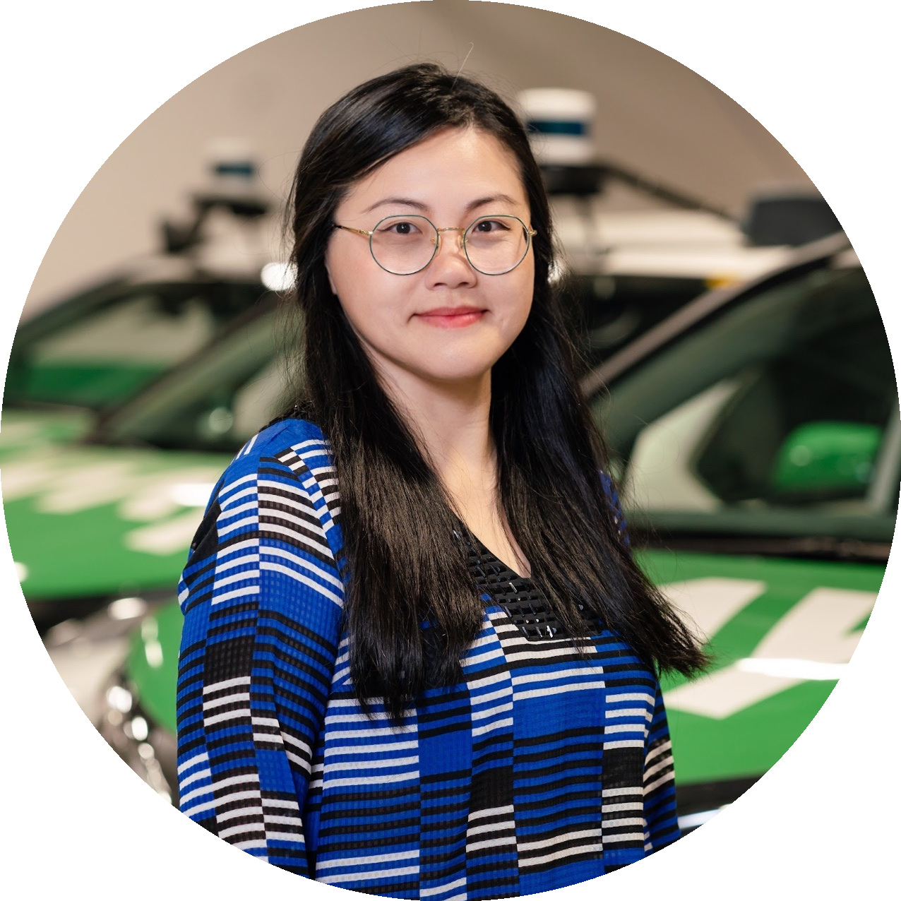

Keynote
Keynote 1: Keep Calm and Commerce On: Real Talk About Autonomous Trucking
Founder and CEO of Bot Auto

Bio: Dr. Xiaodi Hou is the Founder and CEO of Bot Auto, an autonomous trucking company. Dr. Hou is an internationally renowned expert in autonomous vehicles, artificial intelligence, machine learning, and computer vision. He earned a Ph.D. in Computation and Neural Systems from the California Institute of Technology and holds a Bachelor of Engineering degree in Computer Science from Shanghai Jiao Tong University.
Prior to Bot Auto, Dr. Hou co-founded TuSimple in 2015 and served as the company's CTO and CEO. He has presented at global events such as Web Summit and Nvidia's GTC conference and has been featured in leading publications such as Wired and Forbes.
Keynote 2: Winter Is Coming: Extending Self-Driving Perception to Adverse Weather
Professor of Institute for Aerospace Studies
Director of Toronto Robotics and AI Laboratory in University of Toronto

Abstract: Self-driving vehicles are becoming increasingly capable and closer to large-scale deployment. However, they are primarily restricted to operation in a few specific cities with favorable weather conditions. In this talk, I will describe my research into enabling self-driving perception to succeed in adverse weather, be it snow, rain or fog. I will outline the many challenges that degraded sensing presents, and identify the key limitations of current learning techniques which struggle to generalize to the wide variety of conditions that autonomous vehicles can encounter. I will then discuss ongoing projects in my lab that are investigating generalization, adaptation, distillation and self-supervised learning as techniques to help rapidly expand the operational domain of perception networks, without heavy reliance on new labels in each domain. This work will accelerate deployment of large autonomous vehicle fleets into new cities with more varied weather conditions.
Bio: Prof. Steven Waslander is a leading expert in autonomous robotics, specializing in self-driving cars and drones. He founded WAVELab at Waterloo and TRAILab at UTIAS, advancing research in localization, mapping, and multi-robot coordination. His work has earned numerous awards and contributed to Canada's first university-led autonomous vehicle.
Keynote 3: Perception's Next Frontier: World Models and the Future of Autonomous Mobility
Senior Machine Learning Manager - Perception, Autonomy

Bio: Vinay Palakkode is a Senior Machine Learning Manager at Rivian, with over 13 years of experience in machine learning and artificial intelligence. Prior to Rivian, he played pivotal roles in the Apple Vision Pro's incubation and contributed to other consumer electronics product innovations at Apple. His work focuses on robotics, encompassing silicon engineering, large-scale AI software design, computer vision, deep learning, and high-performance computing. His technical contributions include work on autonomous systems, AR/VR technology, network compression, and distributed deep neural network training. At Rivian, he contributes to the development of intelligent transportation systems and also serves in coaching and mentoring roles, supporting several teams.
Panel: Driving Force: Towards Large-Scale Autonomous Driving Commercialization
Moderator
Technical Lead in Generative AI
Lily (Xianling) Zhang is a Technical Lead in Generative AI. Her experience spans BMW, Ford, and Latitude AI, where she drives SOTA research into large-scale production. She has made major contributions in efficient data engines for autonomous vehicles, AI-based simulation for synthetic data generation, and generalizable perception algorithms—each innovation delivering multi-million dollars in operational savings. Her work has been instrumental in enabling BlueCruise L2 and L3 autonomous driving technologies, and her research contributions in novel synthetic data augmentation earned her the prestigious Global Henry Ford Technology Award. Her open-source project DeepSeek, a LLM-powered retrieval engine, ranks in the top 1% of most-starred data retrieval software. A recognized industry leader, Zhang has delivered keynote speeches at international NVIDIA GTC and IEEE IROS conferences. Her recent research focuses on developing AI models that simulate the physical world, which can be used to empower 3D deep learning systems for real-world autonomous driving.

Panelists
Head of TC Autonomous
Matteo Barale is an expert in autonomous driving and robotics with over a decade of experience in mobility, industrial design, and technology innovation. Recognized as a Technology Pioneer by the World Economic Forum, he has played a key role in shaping the future of autonomous mobility with a visionary, interdisciplinary approach. He was Co-CEO and CPO of PIXMOVING, a cutting-edge autonomous driving startup, and is now Head of TC Autonomous, where he led the development of ADone, Italy's first Level 5 Robotaxi. With a background in deep tech and innovation, Barale has collaborated with leading designers like Chris Bangle and held research and teaching roles at MIT, Politecnico di Torino, Tsinghua, and Stanford University.
Senior Deep Learning Engineer at NVIDIA
Nikhil Rao is a seasoned Deep Learning Engineer currently working on Vision Language Models (VLMs) at Nvidia. With a decade of industry experience in Computer Vision and Machine Learning (CVML), Nikhil has a proven track record of translating research into practical deployments. He specializes in productionizing ML models for edge deployment, moving from theoretical research to create real-world, deployable AI solutions. Prior to his role at Nvidia, he held positions at Meta and Ford, where he led significant ML projects. Notably, Nikhil was the lead engineer for Ford's innovative Pro Trailer Hitch Assist, a system that leverages advanced machine learning and computer vision technologies to simplify the trailer hitching process. Nikhil holds a master's degree in Computer Engineering from the University of Central Florida.
Engineering Director at May Mobility
Fiona is an expert at the forefront of Robotics and Autonomous Driving technologies, with over a decade of experience driving groundbreaking innovations from concept to real-world deployment.
She currently serves as an Engineering Director at the leading autonomous driving company, May Mobility, where she leads high-performing, cross-functional teams in developing state-of-the-art perception and prediction systems for autonomous vehicles. Her responsibilities also include driving the strategy for next-generation, cost-efficient sensor suites and architecting scalable machine learning pipelines.
Prior to joining May Mobility, Fiona led the development of the first maritime AI-powered perception system for autonomous navigation at Sea Machines Robotics—pioneering intelligent autonomy for commercial vessels. Before that, she directed research in facial authentication technologies, enabling secure border control and personal identity verification systems adopted by enterprises worldwide.
With more than a decade of experience delivering high-quality, AI-enabled, production-grade software products, Fiona combines deep technical expertise with strategic vision to create solutions that are both scalable and impactful. She is deeply passionate about—and has been instrumental in—successfully bringing state-of-the-art AI into complex real-world applications, transforming cutting-edge research into practical, deployable technology.

President at TIER IV North America Inc.
Christian is an executive leader with business and technical experience in the semiconductor, telecommunication and automotive industries with a successful track record in leading the development and commercialization of innovative technologies and products within budget and on schedule. Leadership and management of cross functional teams spanning systems, hardware, integrated circuits, and software for communication and automotive solutions and products. International business experience spanning North/South America, Europe and Asia.

Distinguished Professor at Shanghai Jiao Tong University
Ruigang Yang is a Distinguished Professor at Shanghai Jiao Tong University and an IEEE Fellow. He received his Ph.D. in Computer Science from the University of North Carolina at Chapel Hill in 2003. He was previously a tenured professor in the Department of Computer Science at the University of Kentucky, the Director of the Robotics and Autonomous Driving Lab at Baidu Research, and the CTO of Inceptio Technology. Dr. Yang has published over 150 papers in top journals and conferences in computer vision and graphics, including IJCV, IEEE T-PAMI, SIGGRAPH, CVPR, and ICCV. His work has been cited over 20,000 times according to Google Scholar, with an H-index of 74.